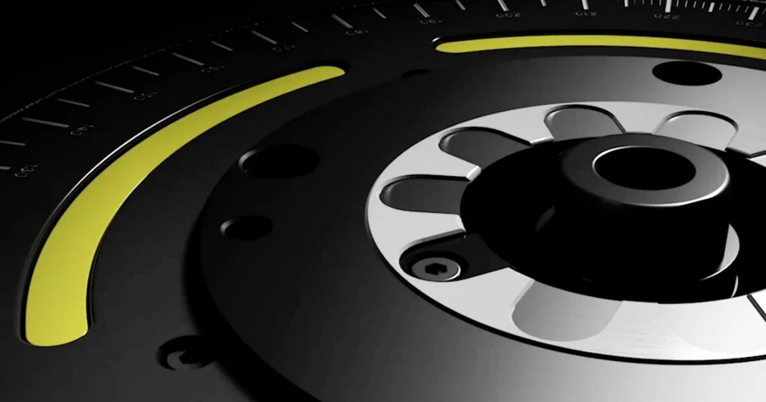

Technique d'impact : vos avantages
L'équilibrage est sous-estimé. Pourtant, l'équilibrage permet d'améliorer la rentabilité, car il réduit l'usure d'outil coûteuse et soulage les broches des machines.
En savoir plus
Les outils qui fonctionnent de manière irrégulière ne peuvent pas être utilisés durablement avec la précision dont vous avez besoin pour vos travaux. Non seulement les vibrations qui en résultent réduisent le rendement global d'usinage, mais elles provoquent également l'apparition d'imperfections sur les pièces, telles que des marques de vibration, qui peuvent nécessiter une retouche. Les déséquilibres dans l’outil entraînent donc des pertes de qualité bien concrètes et compromettent la fiabilité de vos processus.
De plus, ces déséquilibres réduisent également la durée de vie de la broche et, éventuellement, de la machine – les coûts qui en découlent dépassent rapidement les dépenses liées à un équilibrage plus fréquent des outils.
Le terme « déséquilibre » désigne, dans le cas des corps en rotation, le phénomène omniprésent selon lequel leur masse n'est pas répartie de manière symétrique par rapport à l'axe de rotation. On distingue essentiellement trois types de déséquilibre :
Chaque forme spécifique de déséquilibre peut être compensée par des ajustements appropriés apportés au corps en rotation.
Pendant la rotation, un déséquilibre se fait d’autant plus sentir que son amplitude est grande (croissance linéaire) et que la vitesse de rotation est élevée (croissance quadratique). Plus la vitesse de rotation est élevée, plus l’équilibrage devient important, et plus il est essentiel de réduire autant que possible le déséquilibre résiduel. L'équilibrage doit donc être systématiquement intégré au processus de travail.
Dans les systèmes d'outils rotatifs, les déséquilibres constituent un phénomène bien connu et récurrent. Plusieurs causes peuvent être à l'origine de leur apparition, par exemple :
Même avec des porte-outils équilibrés avec précision, la combinaison des porte-outils avec l’outil concret peut à nouveau entraîner un déséquilibre. Il est essentiel de mesurer ce déséquilibre et, le cas échéant, de le corriger.
Lors de l'usinage à grande vitesse de pièces à l'aide de systèmes d'outils rotatifs, la moindre imprécision, le moindre manque de précision, peut, dans certaines circonstances, se faire sentir très rapidement et très nettement. Un déséquilibre de l'outil peut provoquer des vibrations, mais entraîne à coup sûr un fonctionnement irrégulier.
Ces deux phénomènes nuisent à la précision de fonctionnement de l’outil et augmentent toujours le risque d’artefacts et de dommages sur la pièce : la qualité de surface s’en trouve réduite, ce qui peut entraîner des rebuts. Or, comme vos processus dépendent fortement de l’obtention de résultats finaux correctement usinés, des outils qui ne sont pas finement équilibrés nécessitent des contrôles qualité plus approfondis. Des retouches peuvent également s’avérer nécessaires ; dans tous les cas, la fiabilité du processus n’est pas garantie.
Il peut en résulter des retards dans le processus de production, qui ont à leur tour un impact direct sur votre capacité à livrer dans les délais la quantité commandée avec la qualité requise.
À cela s'ajoute le fait que des outils fonctionnant de manière irrégulière peuvent réduire la durée de vie de la broche de tournage, notamment en raison des vibrations – ce qui constitue également un facteur de coût non négligeable.
Un outil équilibré est donc bénéfique tant pour les pièces à usiner que pour les machines.
La règle d'or est donc la suivante : mieux vaut procéder à un équilibrage à temps et plus souvent que de devoir en supporter les coûts au final. De manière générale, un outil doit être rééquilibré dès qu'il est utilisé à une vitesse de rotation différente, car ce changement peut lui aussi entraîner des différences notables en termes de régularité de fonctionnement.
Un équilibrage régulier augmente la productivité et la qualité de votre travail.
De manière générale, il existe trois façons de corriger ou d'éliminer un déséquilibre :
Afin de faciliter ce processus, en particulier pour les outils, et de le réaliser avec précision, il est recommandé d’utiliser une machine d’équilibrage équipée d’un logiciel adapté. Dans un premier temps, l’outil est placé dans une broche d’équilibrage et mis en rotation afin de mesurer les forces centrifuges générées.
À partir de ces données de mesure, le système d'équilibrage calcule ensuite la correction à apporter. Sur une machine d'équilibrage de pointe, les mesures peuvent alors être mises en œuvre immédiatement ; l'équilibrage de précision se poursuit ainsi jusqu'à ce qu'aucun déséquilibre résiduel ne soit plus mesurable ou que toutes les valeurs se situent dans une plage de tolérance acceptable.
De cette manière, l’équilibrage ne prend donc pas particulièrement longtemps, et la masse mal répartie peut être rapidement compensée.
Un système d’équilibrage de haute précision et largement automatisé est également utile car il permet de rééquilibrer les outils à chaque changement de configuration, et ce rapidement. On évite ainsi toute perte de qualité due à des exigences, des vitesses de rotation ou des matériaux modifiés, sans que la cadence de travail n’en pâtisse.
Des outils équilibrés avec précision, même pour un fonctionnement à haute vitesse de rotation : le ZOLLER »toolBalancer« est le système d'équilibrage idéal pour cela. Grâce à sa conception modulaire, il peut non seulement être adapté individuellement à vos exigences spécifiques, mais offre également une grande marge de manœuvre pour les développements futurs.
Ce système d’équilibrage de haute précision convient aux porte-outils, aux meules et aux rotors, et vous garantit une réduction mesurable des taux de rebut, des temps d’arrêt des machines, des coûts de production et des délais de livraison.


L'équilibrage est sous-estimé. Pourtant, l'équilibrage permet d'améliorer la rentabilité, car il réduit l'usure d'outil coûteuse et soulage les broches des machines.

Échange individuel sur vos objectifs et nos idées pour les atteindre. Conseil en ligne de ZOLLER directement depuis la Smart Factory. Prenez rendez-vous dès maintenant.